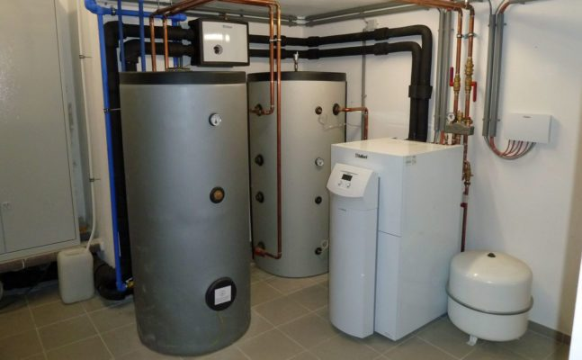
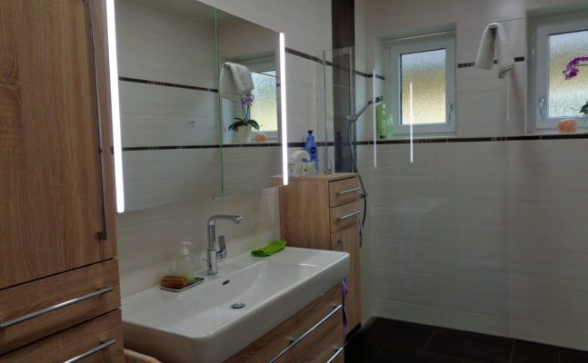
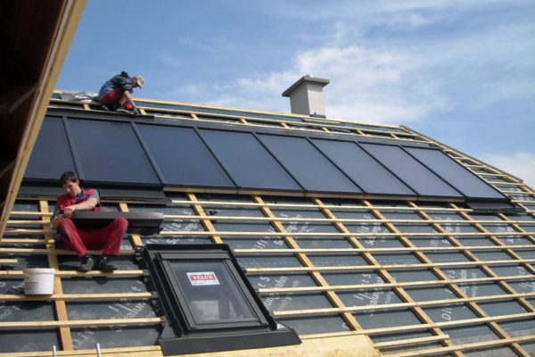
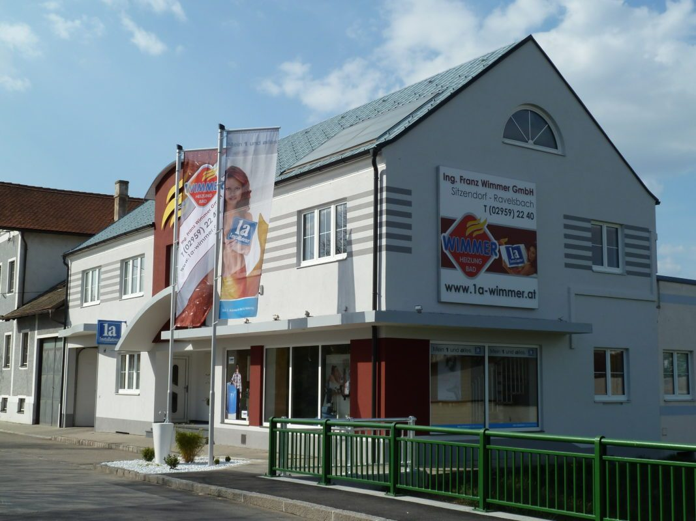

Staubfreie Badsanierung
Mit unserer Spezial-Staubsauganlage bleibt der Rest der Wohnung sauber, während im Bad gearbeitet wird.
Heizung, Bad und Sonnenenergie aus Sitzendorf an der Schmida. Seit drei Generationen gilt bei Wimmer: ein Mann, ein Wort, Handschlagqualität – und ein Team, das bei Wärme und Wasser im Haus jede Frage beantwortet.
Am Tabor 4a, 3714 Sitzendorf a.d. Schmida · 02959 2240 · willkommen@1a-wimmer.at
Wasserschaden, Heizungsausfall oder verstopfter Abfluss? Wir stehen Ihnen zur Seite.
Geschäftszeiten 02959 2240 · außerhalb 0664 523 40 73
Aktuelles
Fragen Sie uns – wir geben Ihnen gerne Details über die aktuellen Fördermöglichkeiten bekannt. Am schnellsten geht es mit unserem Förder-Check: Sie schildern kurz Ihre bestehende Anlage, wir melden uns mit den passenden Möglichkeiten.
Unsere Bereiche
Sie haben Fragen zu Installationsarbeiten oder einer neuen Heizung? Sie planen eine Badsanierung oder die Errichtung einer Solar- oder Fotovoltaikanlage? Nehmen Sie Kontakt mit uns auf – wir freuen uns auf Sie.

Kuschelige Wärme im ganzen Haus – Wärmepumpe, Pellets und Holz, Gas und Öl, dazu Service, Wartung und Fernwartung per Smartphone.

Wellness in den eigenen vier Wänden – 3D-Badplanung, staubfreie Badsanierung und ein eigenes Bad-Beratungsstudio.

Aus Sonne wird Warmwasser und Strom: Solarthermie für Warmwasser, Heizung, Pool und Kühlung sowie Fotovoltaik.
Highlights bei Wimmer
Mit unserer Spezial-Staubsauganlage bleibt der Rest der Wohnung sauber, während im Bad gearbeitet wird.
Wir messen Rauch und Abgas bei Ihrer Heizungsanlage und dokumentieren die Werte.
Gas-Sicherheits-Check und 10-Jahres-Überprüfung Ihrer Gasanlage.
Wir orten die Ursache mit der Kanalkamera und rechnen direkt mit Ihrer Versicherung ab.
Befüllung Ihrer Heizungsanlage mit reinstem Osmose-Wasser – schont Kessel und Leitungen.
Referenzen
Jeder Kunde ist anders, doch eines bleibt immer gleich: unser voller Einsatz für Ihre Wünsche. Denn wir sind erst zufrieden, wenn Sie von unserer Arbeit begeistert sind und uns weiterempfehlen.
5 Referenzen werden angezeigt
1a Installateur-Betrieb
Die 1a-Installateure sind eine Gruppe von rund 200 selbständigen, innovativen Installationsbetrieben in ganz Österreich. Sie wurden zur 1. Adresse für Bad und Heizung, weil sie sich von Anfang an zu Leistungen höchster Qualität verpflichtet haben. Der 1a-Installateur ist also nicht umsonst ein Synonym für Qualität in der Installateurbranche.
Standort
Bestimmt gibt es einiges, was Sie gerne wissen möchten, bevor Sie sich für eine Heizung oder ein Bad entscheiden. Darum bieten wir Ihnen den Besuch eines Experten an – gratis und unverbindlich.
